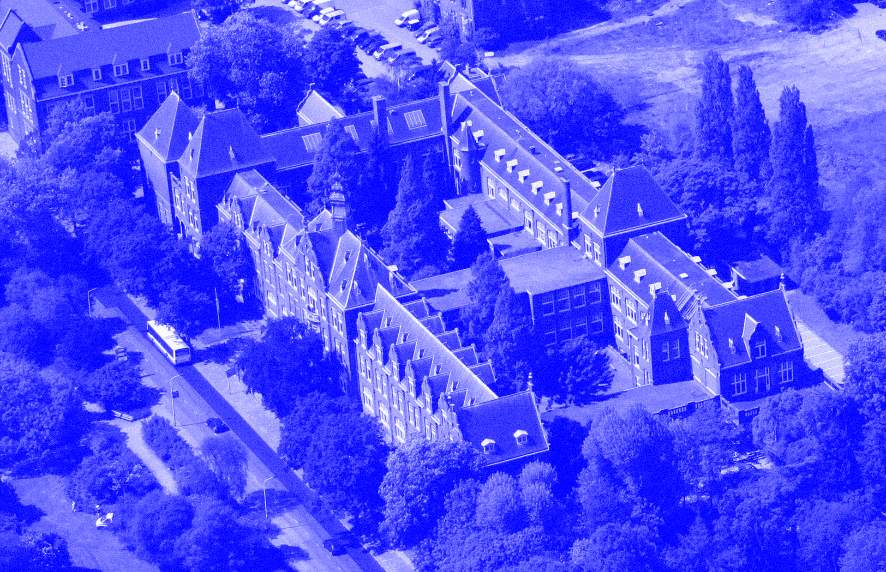
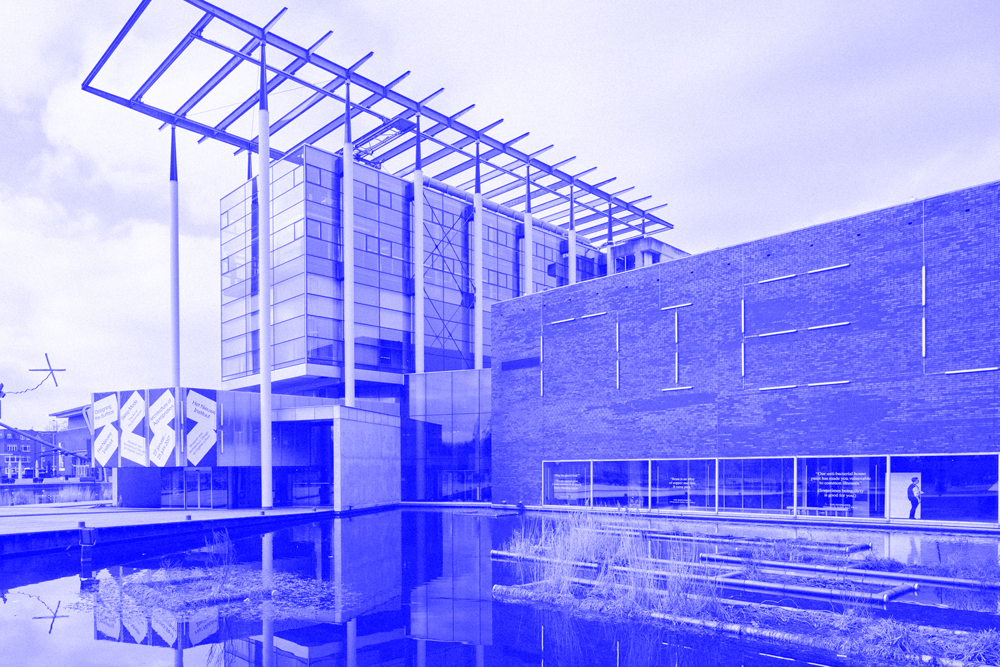

FOR ATTENDEES
Registration is Now Open!
Stay:
Prices:
Early bird €390
January 17 — February 18, 2019
Full price €490
February 19 – March 15, 2019
Student early bird €290
Student full price €390
Workshops fee €45
(Due to increased organizational costs, the fees have been raised)
Key Dates:
8 June 2018
Stage 1 submissions (anonymous) deadline
16 July 2018
Author notification abstract acceptance
19 October 2018
Full papers and workshops submission deadline
18 December 2018
Author notification final acceptance
18 January 2019
Camera ready due
18 February 2019
Early bird registration ends
15 March 2019
Registration closes
19–22 March 2019
Conference
Venues:
Science Centre Delft
To the outside world it often is a mystery what happens at a technical university. What is research and what are those seemingly complicated research projects actually about? What is the impact of these projects on our society at large?
Science Centre Delft shows what students and researchers from the Technical University of Delft do on a daily basis, and on which subjects their research focuses. The museum displays research equipment as well as a reflection on both recent and current research and graduation projects. Visitors can contribute to various research projects through open workshops which resemble real life research environments as much as possible.
tudelft.nl/sciencecentre

Het Nieuwe Instituut
Het Nieuwe Instituut organizes exhibitions, workshops, residencies and events that approach the various design sectors from an integrated perspective. Informed by an understanding of contemporary technological, economic, cultural and social shifts, Het Nieuwe Instituut offers RTD 2019 a unique opportunity to promote a more integral approach to design that is grounded in and bound up with the principles of changing value systems and conflict.
hetnieuweinstituut.nl/en
